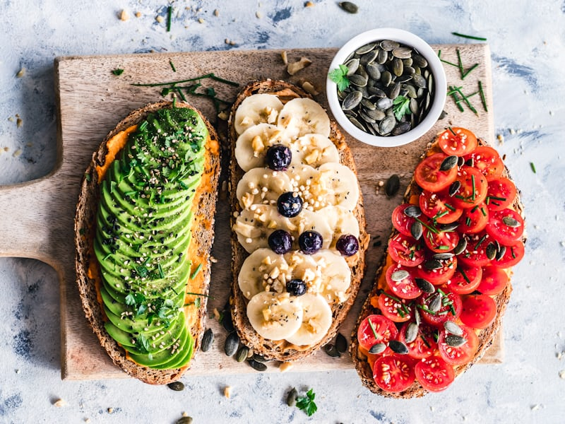
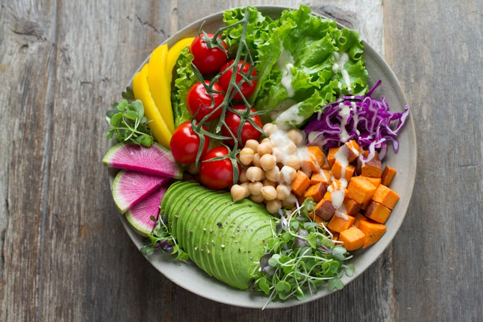
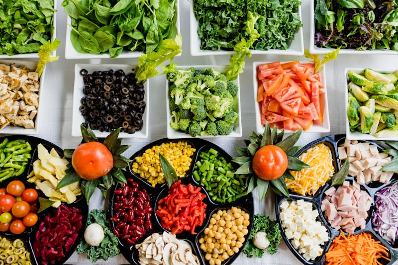

The Biodiversity Crisis is Here
The variety of life on Earth is vanishing at an unprecedented rate. A key driver of this crisis is habitat destruction fueled by traditional agriculture. Vast forests are cleared for livestock, pushing countless species towards extinction and disrupting the delicate balance of our ecosystems.


A Powerful, Delicious Solution
By shifting towards alternative proteins, we can reclaim land for nature, drastically cut our water usage, and reduce pollution. Modern plant-based and cultured meats offer the flavors and textures we love without the devastating environmental cost. It's a choice that is better for us, and for our planet.
Did You Know?
Here are some hard-hitting facts about the impact of our food choices.
83% of Farmland
Is used for livestock, but it produces just 18% of our calories. A global switch to plant-based diets could free up an area of land the size of Africa.
60% of Biodiversity Loss
Is caused by the food we eat. The meat and dairy industries are the single biggest drivers of species extinction worldwide.
2,500 Gallons of Water
Are needed to produce just one pound of beef. In contrast, a pound of vegetables requires only about 25 gallons.
Myth vs. Fact
Separate the truth from the fiction about alternative proteins.
Myth: It's unnatural and full of chemicals.
Fact: Cultured meat is grown from animal cells in a sterile environment, reducing the need for antibiotics. Plant-based meats use common plant ingredients, often less processed than many traditional foods. Both are highly regulated.
Myth: It's only for vegans/vegetarians.
Fact: Alternative proteins are for anyone who wants to reduce their environmental impact, improve animal welfare, or enjoy delicious, healthier options. Many meat-eaters are flexitarians and enjoy these products regularly.
Myth: It doesn't taste as good as real meat.
Fact: Technology and culinary science have made huge advancements. Many blind taste tests show consumers can't tell the difference, and some even prefer the taste and texture of alternative protein products.
Myth: It's too expensive.
Fact: While some products started at a higher price point due to nascent technology and smaller scale, prices are rapidly decreasing. Many plant-based options are already more affordable than their animal counterparts, especially when considering environmental costs.
Meet the Innovators
A revolution in food is underway, led by visionary companies. Explore the pioneers creating the future of meat.

Upside Foods
Pioneers in delicious, cultured chicken and beef, made from animal cells without the farm.

Beyond Meat
A leader in plant-based meat, offering burgers and sausages that are better for you and the planet.

Impossible Foods
Famous for its "bleeding" plant-based burger that has transformed the industry.